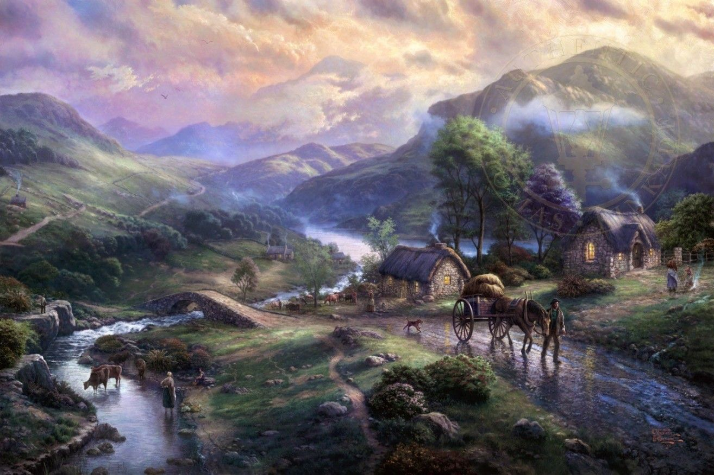

La pintura muestra una ciudad escondida en un frondoso bosque en Skyrim. La ciudad está construida alrededor de un gran árbol antiguo y su imponente presencia domina el paisaje. Las casas y edificios se han construido en las ramas y en la base del árbol, dando la impresión de que la ciudad crece junto con el árbol.
El bosque que rodea la ciudad está lleno de árboles altos y densos que crean una cúpula natural sobre la ciudad, haciendo que la luz del sol filtre a través de las hojas y iluminando los edificios y las calles de la ciudad. La pintura está hecha en tonos cálidos y naturales, con verdes profundos y marrones terrosos que reflejan la riqueza del bosque que rodea la ciudad.